SmartTools Add-on Manual
SmartModeling Suite Manual
Version 1.0.0 / November 19, 2026 / For Blender 5.1.2
SmartModeling Suite is a collection of tools that help you create and fix meshes. In the "Smart Modeling" tab of the Sidebar (N panel), all the tools are lined up by type of work. Each tool is loaded only when you press its button, so tools you don't use never slow Blender down. Only the features that have a background mechanism (always-on features) can be turned on or off in "Always-on Toggles". Shortcuts are not registered automatically. Register only the ones you need yourself, using "Manual Keymap Registration" in each tool.
Copy the edited ears to a matching mesh
Edit one model, then paste the vertex positions onto its matching partner. Watch the second pair of ears take the same shape.
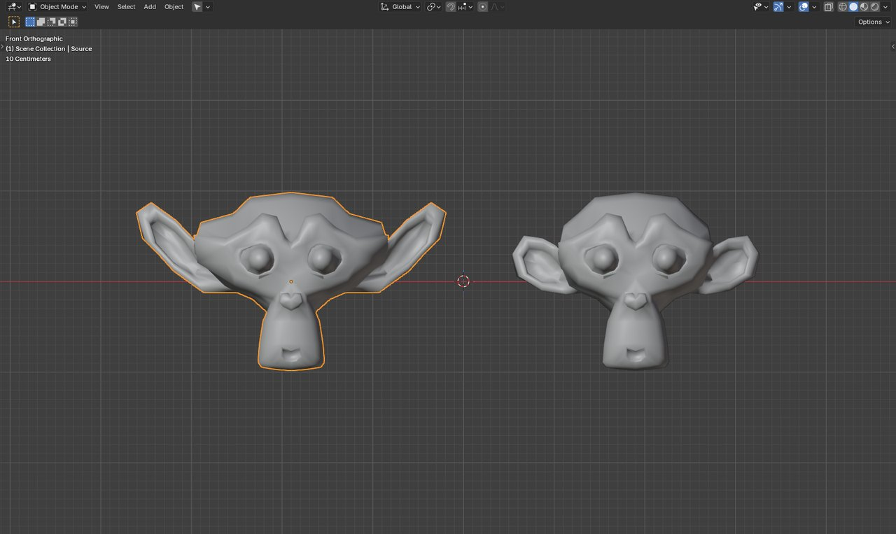
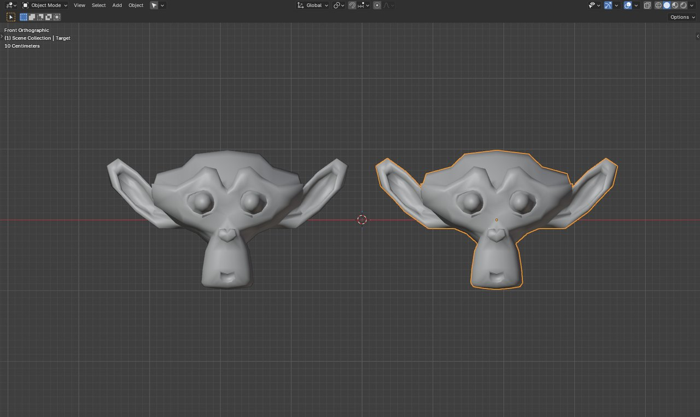
Before you try it Use meshes with matching vertex correspondence as in the example.
1. What This Add-on Does
An add-on that gathers modeling helper tools, including vertex editing, alignment, deletion, retopology, hard surface modeling, and generation, into a single Sidebar.
- Remember the positions of the selected vertices and paste them onto the vertices with the same numbers in another mesh (Vertex Copy)
- Move vertices only along their connected edges (Vertex Slide)
- Straighten and flatten vertices, edges, and faces (Mesh Align)
- Toggle Auto Merge and snapping together in a single operation (Merge Snap)
- Delete quickly to match the selection, with fewer confirmation dialogs (Direct Delete)
- Tidy up the names, transforms, and data of the selected objects in one go before exporting (Model Organizer)
- Assign creases (how sharp corners stay after subdivision) to edges using presets (Crease Preset)
- Add weighted normals that refine the shading of hard surface models (Weighted Normal)
- Convert annotation lines into strip-shaped faces (Sketch Surface)
- Draw strips of quad faces along a surface to move retopology forward (Quad Retopo)
- Use commands such as Boolean, loop cleanup, scatter, and terrain from large icons (Modeling Toolkit)
- Use the bundled tools (Loop Tools, Edge Flow, Bolt Generator, Tree Generator, and more) from the same Sidebar
- When you want to copy a shape fixed in one mesh onto another mesh with the same vertex count and connectivity
- When you want to shift vertices along the flow of the faces during retopology
- When you want to finish applying scale, naming, and removing unneeded data in one go before exporting
- When you want to refine the sharpness of corners and the shading on hard surface models such as machines and props
- When you want to quickly make terrain, trees, ivy, snow, and architectural parts for backgrounds
At a Glance
This is how the screen changes when you use this add-on. Chapter 5 walks through the exact steps in the "Example" boxes for each feature.
ExampleStraighten a Wavy Row of Vertices into a Line(demonstrated on Grid plane)
Select a single bumpy, wavy row of vertices and realign it on the straight line that connects its two ends.
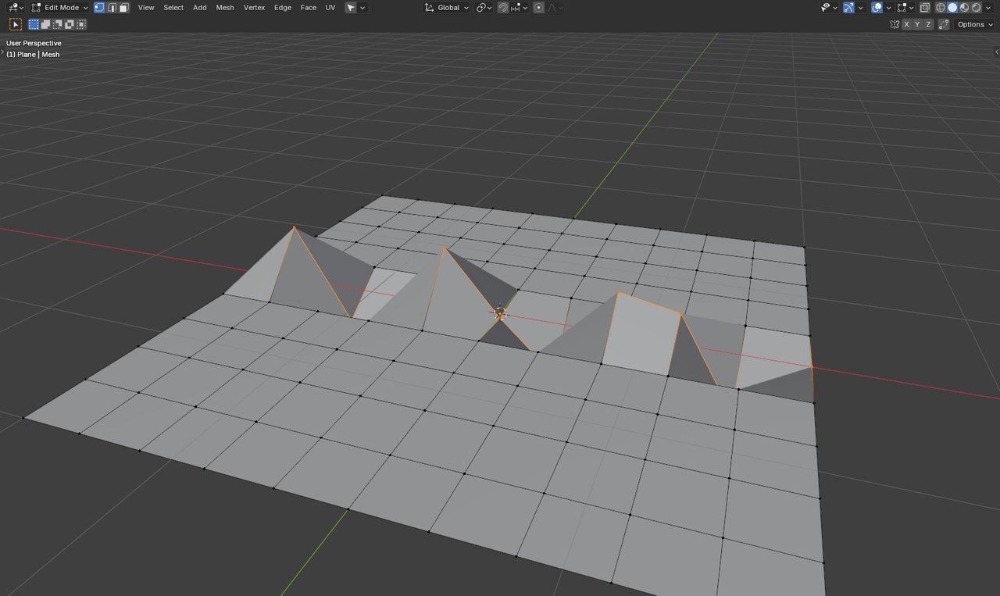

- Put the plane in Edit Mode and switch to vertex select mode.
- Select the wavy row of vertices from one end to the other.
- Open "Smart Modeling" tab > "Align, Flow and Deform" > "Mesh Align".
- Click "3D Line" in the "Execution" area.
What to look for: The peaks and valleys of the selected row disappear, and the vertices line up on a single straight line connecting the two ends. The other, unselected rows do not move. The shading is also corrected right away, and the faces on both sides of the row look smooth.
ExampleCut a Hole in Suzanne with a Cylinder (Boolean)(demonstrated on Suzanne and a cylinder)
Use a cylinder that passes through the head as the cutter (the cutting side) to make a round hole in Suzanne. The cut is made with a modifier, keeping the original shape intact.
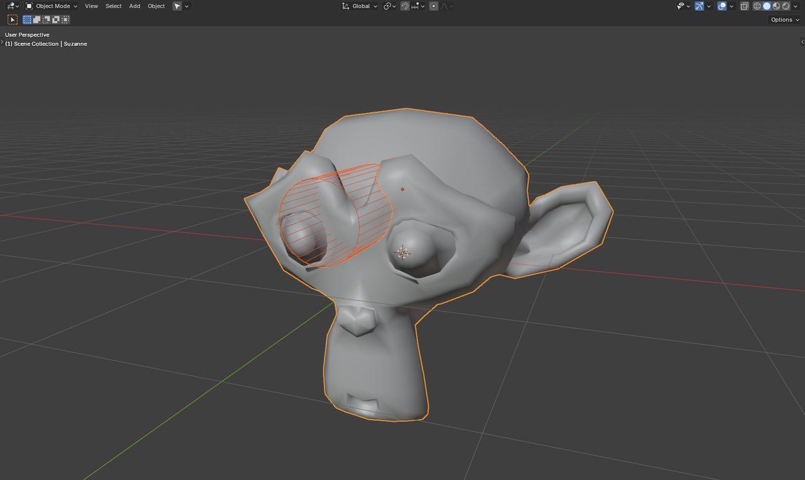
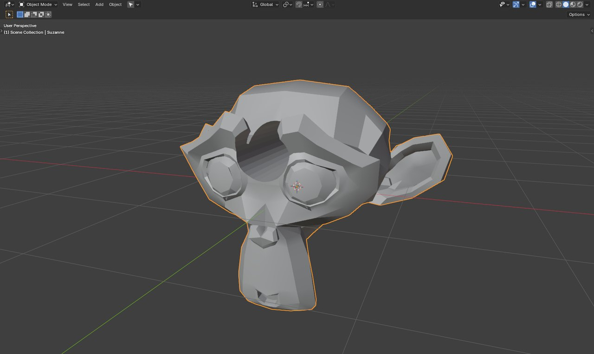
- Select the cutter cylinder, then hold Shift and select Suzanne to make Suzanne active.
- Open "Smart Modeling" tab > "Utilities" > "Modeling Toolkit".
- Click "Create Boolean Fusion" in the "Execution" area.
What to look for: The cylinder is hidden, and a round hole opens where it passed through. At the same time, a small chamfer (bevel) is added to the corners, giving an angular look with crisp shading.
2. Key Features
This chapter walks through the features unique to this add-on, using numbered callouts on each figure. The numbers in a figure match the numbered list below it. Click a figure to enlarge it. Each individual setting is described under its own heading in Chapter 5.
2-1. Quad Retopo (Draw on the Surface to Rebuild)Top Feature
A tool for drawing a light mesh made only of quad faces on top of a high-poly sculpt or scan to rebuild it (retopology). Click on the surface and a quad strip extends one row at a time. For wide areas, drag as if painting and multi-row strips are made all at once. The faces you draw always stick to the original surface (the target), so there is no need to fit the shape again afterward.
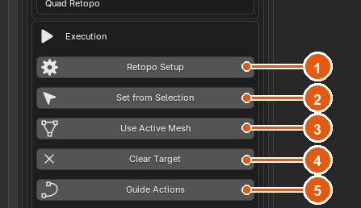
- 1Retopo Setup: Set the target (the original mesh whose shape is copied), offset, maximum projection distance, and front faces only all together
- 2Set from Selection: Make the selected mesh the target
- 3Use Active Mesh: Make the active mesh the target
- 4Clear Target: Remove the target
- 5Guide Actions: A popup that gathers registering, clearing, and reselecting guides for the selected edges
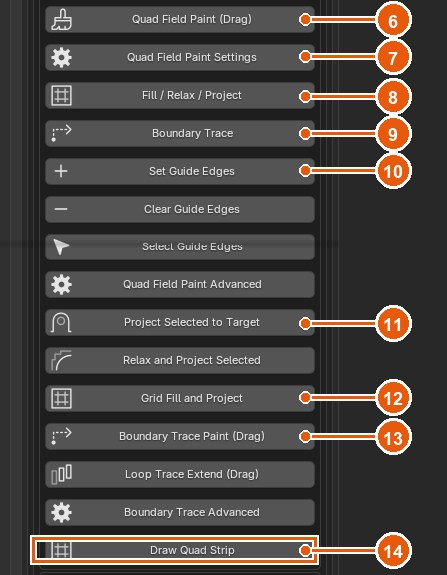
- 6Execution (Quad Field Paint): Drag as if painting a surface to make multi-row quad strips at once
- 7Quad Field Paint Settings: Patch width, density, flow guidance, stitching, and finishing
- 8Fill / Relax / Project: A popup that gathers tools for filling holes, smoothing, and projecting
- 9Boundary Trace: A popup that gathers tools for extending along openings, cuffs, and seams
- 10Set Guide Edges: Make the selected edges guide edges. The flow direction of ⑥ follows the guides
- 11Project Selected to Target: Move the selected vertices to the nearest surface and lift them by the offset along the normal direction
- 12Grid Fill and Project: Select an open boundary loop and click it to fill with grid faces and then project
- 13Boundary Trace Paint (Drag): Extend faces from an open boundary in the direction you drag
- 14Draw Quad Strip: Click along the surface to make a one-row quad strip
- Set the target with "Retopo Setup" at ①. The quick way is to select the original mesh and click "Set from Selection" at ②.
- Click "Draw Quad Strip" at ⑭ and click along the surface. The first click sets the start point, the second sets the direction, and the third confirms; after that, each click extends it by one step. Alt changes the width, and Ctrl+Alt changes the thickness. Right-click to end a continuous run, and press Esc or Enter to finish drawing, which also creates the UVs.
- For areas too wide to draw one strip at a time, paint with "Execution (Quad Field Paint)" at ⑥. Draw with a left drag, press Backspace to undo one step, confirm with a right click or Enter, and cancel with Esc.
- To finish, fill holes and make the mesh stick to the surface with "Project Selected to Target" at ⑪ or "Grid Fill and Project" at ⑫.
- Field painting comes with guide alignment, live merge, edge snap, boundary following, and automatic fill. If you register guide edges at ⑩, the flow direction follows the guides.
- Turning on "Front Faces Only" prevents projection from passing through to the back side of the model. Setting the maximum projection distance to 0 projects with no distance limit.
- Cuffs and openings can be extended along their edges with the boundary trace paint at ⑬.
- If you start with the target not set, click ②, or select the target together with the mesh before drawing.
Settings in detail: 5-5. Retopo and Rebuild
2-2. Vertex Copy (Copy Only the Shape to Another Mesh)See It in Figures
The Suzanne on the left (a shape with larger ears) was copied and pasted onto the Suzanne on the right. Only the vertex positions (the shape) are copied, and the placement of the right Suzanne does not change. You can also write the shape as a shape key.

- 1Paste Target: The right Suzanne
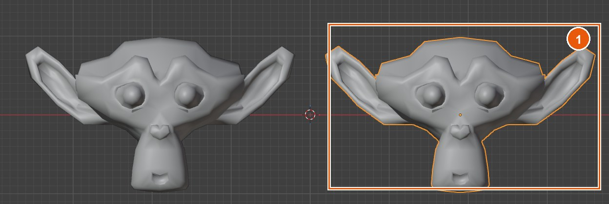
- 1Paste Target: The right Suzanne
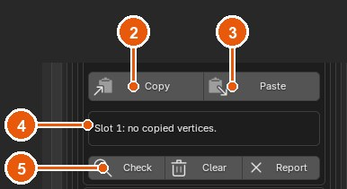
- 2Copy: Remember the shape of the selected mesh in a slot
- 3Paste: Copy the shape in the slot onto the selected mesh
- 4Slot: A shelf for storing shapes. You can remember several
- 5Check: Only check whether the vertices can be matched, without writing anything
- Select the shape source (left) and click "Copy" at ②.
- Select the paste target (right) and click "Paste" at ③.
- Paste methods: Exact (straight to the same vertex numbers), Mirror Exact (mirrored left to right), Smart (estimates the vertex correspondence), Mirror Smart, and Surface Project (projects onto the surface). The Exact methods are used between meshes with the same topology and the same vertex order.
- You can choose where to write: the mesh itself, a new shape key, or a specified shape key.
- You can choose the paste target: the active one, all selected ones, all in a collection, ones with the .L/.R-flipped name, or ones with a specified name.
- Vertex groups, UVs, and custom normals can also be copied.
Settings in detail: 5-3. Edit and Transfer
2-3. Vertex Slide (Make G, R, and S Follow Edges as They Are)See It in Figures
While "Toggle Vertex Slide" is on, vertices moved with the usual move, rotate, and scale in Edit Mode, or with the transform gizmo, are corrected so they slide along the connected edges. You can adjust only the position of a loop without breaking the shape. If you set "Vertex Slide" to "On" in "Always-on Toggles", the same toggle button also appears in the header of the 3D Viewport.
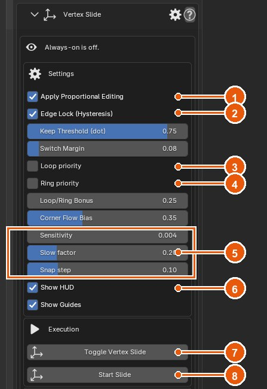
- 1Apply Proportional Editing: When proportional editing is on, the vertices inside the radius slide together
- 2Edge Lock (Hysteresis): Suppresses reselecting the edge to slide along, to keep the movement stable
- 3Loop priority: When unsure, choose the direction that follows the edge loop (L key)
- 4Ring priority: When unsure, choose the direction that crosses the ring (R key)
- 5Sensitivity to Snap Step: The fineness of movement, and the snap step
- 6Show HUD: Show the ratio and key guide on screen during sliding
- 7Toggle Vertex Slide: While on, corrects the usual G, R, and S and gizmo movements onto the edges. Same as ⑨
- 8Start Slide: Start Vertex Slide on the spot
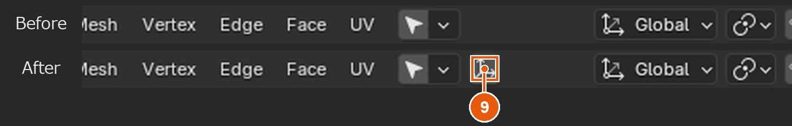
- 9Header toggle button: The arrow button that appears to the right of "UV". Works the same as ⑦
- Set "Vertex Slide" to "On" in "Always-on Toggles". If it stays disabled, ⑦ cannot be clicked and ⑨ in the header does not appear.
- In Edit Mode, click "Toggle Vertex Slide" at ⑦ or ⑨ in the header to turn it on.
- Move vertices with G, R, S, or the gizmo as usual. The vertices slide along the connected edges.
- When you are done, click it again to turn it off. On and off are not saved in the file, and it starts off when you reopen it.
- C switches the behavior, and Shift+C turns proportional editing on or off.
- L switches to Loop priority, R to Ring priority, and B switches the reference (individual / active).
- Shift for slow, Ctrl for snap, and Alt to reverse the direction.
- Use the mouse wheel to change the proportional radius, and type a number to set the ratio directly.
Settings in detail: 5-2. Always-on Toggles, 5-4. Align, Flow and Deform
3. Getting Started
How to install the add-ons, how to change the interface language, and how the N panel and the "?" help buttons work in every add-on are covered in the "SmartTools Overall Specification". Please read chapters 2 to 5 there first.
| ZIP to install | SmartModelingSuite_1.0.0.zip |
|---|---|
| Name shown in Blender | Smart Modeling |
| Supported Blender | 5.1.2 |
4. Where to Find It
It is the "Smart Modeling" panel inside the "Smart Modeling" tab of the 3D Viewport Sidebar (N panel). The same panel appears with the same content in the Sidebar of the Image Editor, Node Editor, Video Sequencer, Movie Clip Editor, Dope Sheet, Graph Editor, NLA Editor, Text Editor, File Browser, and Spreadsheet. When you have set where it appears in Smart Tools Manager, that setting is followed.
| Editors | 3D Viewport, Image Editor (UV Editor), Node Editor, Video Sequencer, Movie Clip Editor, Dope Sheet, Graph Editor, NLA Editor, Text Editor, File Browser, Spreadsheet |
|---|---|
| Tab | Smart Modeling |
| Mode | It is shown in every mode. However, many mesh editing tools are used in Edit Mode. |
- For installation, localization, and how to open the N panel, see the relevant chapter of the SmartTools Overall Specification.
- Click "Smart Modeling" in the tabs at the right edge of the Sidebar.
- "Always-on Toggles" is at the very top, and below it are section headers for each type of work (such as "Edit and Transfer").

5. Features
Each heading is explained in order from the top of the panel. Click the "?" to the right of a heading to show the same explanation in Blender. The blue "Example" boxes show real operations on simple models such as Suzanne, with the 3D Viewport before and after.
5-1. Reading the "Smart Modeling" Panel (Common Layout)
The panel consists of "Always-on Toggles" at the very top and eight section headers, one for each type of work. Click a section header to open or close it. The number to the right of a section header is the number of tools inside. Inside each section header, the tools are lined up one per row.
Location"Smart Modeling" tab > "Smart Modeling" panel
| Item | What it does |
|---|---|
| Section header (such as "Edit and Transfer") | Click it to open or close the list of tools inside. The number on the right is the number of tools. The "?" help button at the right edge shows an explanation of that section header. |
| Tool row | Click a row with a tool name to open the contents of that tool. A gear mark and a "?" help button appear on the right of the row. "Loading" appears while the tool is being loaded, and "Error" appears if loading fails. |
| "?" help button | Click it to show the explanation screen for that tool. "1. Feature Overview", "2. Usage", and so on are listed. For the common usage of the "?" help button, see the SmartTools Overall Specification. |
| Opened contents (Settings, "Menu", "Execution") | For a tool that has never been used, the "Settings" area and the buttons in the "Menu" and "Execution" areas are listed. When you click a button in the "Execution" area, only that tool is loaded and run. After loading, the display changes to that tool's own screen. Some button names and layouts change (see the explanation of each tool). |
| "Manual Keymap Registration" | It appears below the contents of tools that can register shortcuts. "Purpose", "Registration Location", and "Registration ID" are listed for each command. This add-on does not register shortcuts automatically. Click the copy icon to the right of "Registration ID" to copy the ID, then register it in the keymap yourself. |
5-2. Always-on Toggles
This is where you turn on or off, all together, the features that keep running in the background after loading (display helpers, additions to menus, background processing, and so on). Only tools that truly have a background mechanism appear here. If you set only the ones you need to "On", startup and file loading stay light. Everything is "Off" at first (only "N-panel State Save" is "On" from the start).
Location"Always-on Toggles" at the very top of the "Smart Modeling" panel
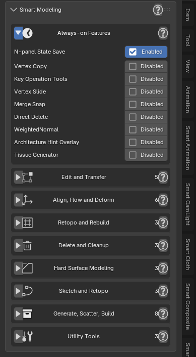
| Item | What it does |
|---|---|
| "N-panel State Save" | Choose whether to save the open state and settings of this panel every time you change them. When it is "On", the same state is restored the next time you open Blender. |
| "Vertex Copy" | Switch whether the Vertex Copy live preview (a mechanism that previews the paste result on screen) runs. |
| "Key Ops Toolkit" | Switch the background processing, menu integration, and tablet and Outliner integration of the Key Ops Toolkit. Shortcuts are not added automatically. |
| "Vertex Slide" | Switch the status display and the deformation watcher of Vertex Slide. When you set it to "On", a toggle button also appears to the right of "UV" in the header of the 3D Viewport in Edit Mode. Vertex Slide itself does not run until you click "Toggle Vertex Slide" or this button. |
| "Merge Snap" | Switch the status display and header integration of Merge Snap. |
| "Direct Delete" | Switch the background part of Direct Delete. Even when you set it to "On", registration to the Delete and Backspace keys is not done automatically. |
| "Weighted Normal" | When you set it to "On", "Run Apply Weighted Normal" is added at the very bottom of the "Normal" menu (Alt+N) in Edit Mode. Setting it back to "Off" removes it. |
| "Architecture Hint Display" | Switch the hint display of Architecture. |
| "Tissue Generator" | Switch Tissue's automatic update when the frame changes. If you don't need automatic updates, leave it "Off". |
| "On" / "Off" button | This is the button with a check mark on the right of each row. Each click switches between "On" and "Off". |
5-3. Edit and Transfer
This section header holds tools that edit the mesh directly, such as copying vertex positions and connecting or splitting selected parts.
Location"Smart Modeling" panel > "Edit and Transfer"

| Item | What it does |
|---|---|
| "Vertex Copy" | Remember the positions of the selected vertices in a slot (a temporary storage place) and paste them onto another mesh or another selection. It supports transfer to the same topology (a shape with the same vertex count and connectivity), transfer to a similar shape, left-right mirroring, and projection onto faces. Before loading, many items in the "Settings" area and buttons such as "Copy Source", "Paste Same Vertex Number", "Validate Same Vertex Number", "Clear Clipboard Slot", "Clear Report", "Auxiliary Paste", and "Auxiliary Check" in the "Execution" area are listed. After loading, they are grouped into five buttons, "Copy", "Paste", "Confirm", "Clear", and "Clear Results", and the detailed items move into the "Settings" and "Auxiliary Functions" areas. By default, only the vertices selected in the paste target change. For the report export format, choose between "JSON File" and "CSV File". "Manual Keymap Registration" lists "Copy", "Paste to Same Number", "Validate Same Number", "Apply Transfer", and "Validate Targets". |
| "Mesh Connect" | Quickly connect the selected vertices or edges. When you click "Connect Selection" in the "Execution" area, it connects immediately for a vertex selection, and for an edge selection it opens a popup when "Show Popup" is on. When it is off, it connects immediately with the values in the "Settings" area without showing the popup. In the popup, adjust "Normal Connect", "Connect Flow", segments (the number of divisions), pinch, and slide, then click "Apply" to run it or "Cancel" to abort. "Connect Selection" can also be used by registering its registration ID from "Manual Keymap Registration" to a key. |
| "Mesh Split" | Split the selected part to match the current selection mode (vertex, edge, or face). The button is "Mesh Split". |
| "Key Ops Toolkit" | A toolkit that includes working shortcuts, menu integration, and tablet and Outliner integration. Enable the background parts in "Always-on Toggles" only when you need them. For shortcuts, copy the registration ID from "Manual Keymap Registration" and register it yourself. "CAD Decimate" in the "Execution" area adds a modifier that reduces polygons to the selected mesh. "Export", "Process CAD Decimate", and "Import All" are buttons that do the same processing in three manual steps. The first time you click the CAD Decimate button, the settings and manual steps are added to "Panel UI" of this item. |
| "Mesh Edit Toolkit" | A collection of additional operations that help with cleanup and shaping in Edit Mode. Buttons such as "Vertex Chamfer", "Offset Edges", "Edge Roundifier", "Face Inset Fillet", and "Cut Faces" are listed in the "Execution" area. |
- Put the source mesh in Edit Mode and select the vertices you want to copy.
- Open "Vertex Copy" and click "Copy Source". After loading, this button becomes "Copy".
- Put the target mesh in Edit Mode and select the vertices you want to change.
- Click "Paste Same Vertex Number". After loading, it is "Paste".
- If it doesn't match well, check the number of matching vertices with "Validate Same Vertex Number". After loading, it is "Confirm".
ExampleConnect Two Opposite Vertices with an Edge(demonstrated on Cube)
Select two vertices on the same face, create a new edge between them, and split the face in two.
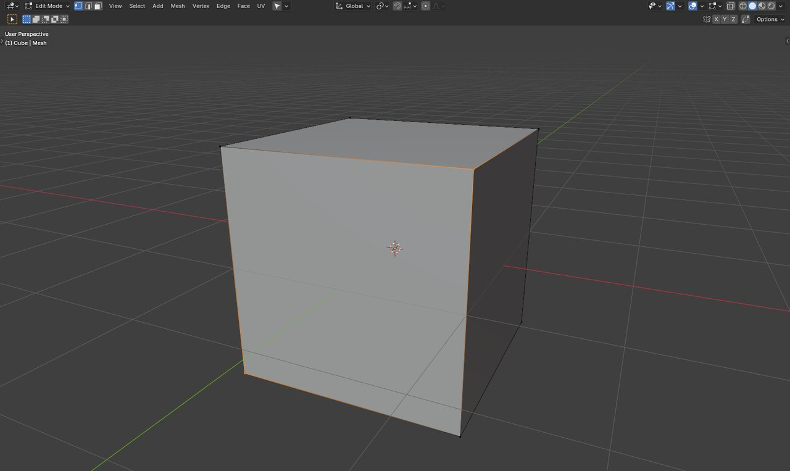
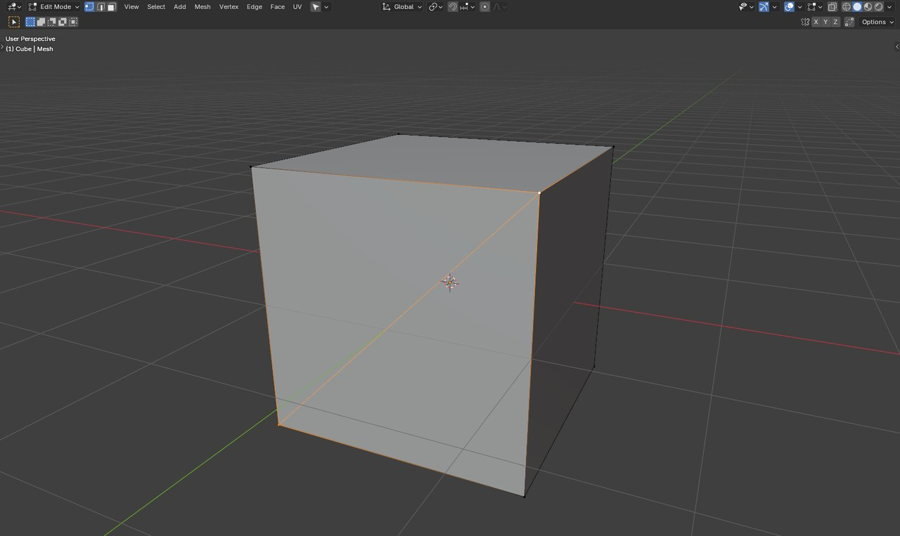
- Put the cube in Edit Mode and switch to vertex select mode.
- Select two diagonally opposite vertices of the front face.
- Open "Smart Modeling" tab > "Edit and Transfer" > "Mesh Connect".
- Click "Connect Selection" in the "Execution" area.
What to look for: A new diagonal edge connecting the two selected points appears on the front face, and the square face is split into two triangles.
ExampleCopy the Shape with Enlarged Ears to Another Suzanne(demonstrated on Two Suzannes)
Between two meshes with the same vertex count and connectivity, copy the vertex positions of one onto the other.
- Put the left Suzanne in Edit Mode and select all vertices.
- Open "Smart Modeling" tab > "Edit and Transfer" > "Vertex Copy".
- Click "Copy Source".
- Return to Object Mode, put the right Suzanne in Edit Mode, and select all vertices.
- Click "Paste" ("Paste Same Vertex Number" on the screen before loading).
What to look for: The ears of the right Suzanne change to the same size as on the left. The object stays where it is, and only the shape is copied.
ExampleReduce the Extra Lines of a Dense Cylinder (CAD Decimate)(demonstrated on Finely divided cylinder)
Lighten a finely divided mesh, such as one imported from CAD, while keeping its shape.
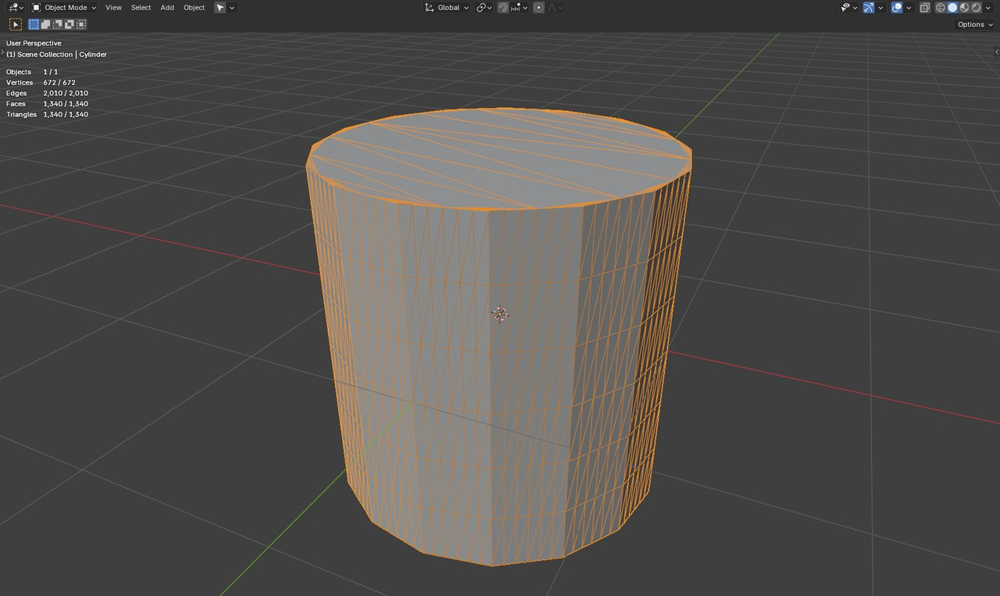
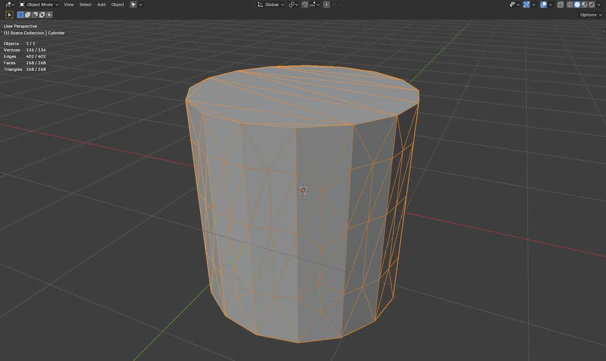
- Select the cylinder in Object Mode.
- Open "Smart Modeling" tab > "Edit and Transfer" > "Key Ops Toolkit".
- Click "CAD Decimate" in the "Execution" area.
What to look for: The number of lines goes down while the shape stays almost the same. The original mesh remains, and the reduction is done with a modifier.
5-4. Align, Flow and Deform
This section header holds tools that refine the shape, such as aligning vertices, arranging the flow of edges, and sliding.
Location"Smart Modeling" panel > "Align, Flow and Deform"
| Item | What it does |
|---|---|
| "Vertex Slide" | Slide vertices or edges along their connected edges. It supports "Loop priority", "Ring priority", and proportional editing (a feature that moves the surrounding area together). In the "Settings" area, you can choose "Edge Lock (Hysteresis)", "Loop priority", "Ring priority", "Show HUD", "Show Guides", and more. The buttons in the "Execution" area are "Toggle Vertex Slide" and "Start Slide". While the toggle is on, ordinary move, rotate, and scale (G/R/S) and gizmo operations also move along the edges. During a slide started with "Start Slide", confirm with a left click or Enter, and cancel with a right click or Esc. |
| "Mesh Align" | A set of presets that align the selected vertices, edges, and faces. The buttons in the "Execution" area are "Open Align Presets", "3D Line", "Align to Grid", "Clear Annotations", "Equal Edge Length" (makes the lengths of the selected edges equal), and "Set Flow". After you use it once, a "Settings" area ("Distribute Evenly" and "Flow Algorithm") is added at the top. "Open Align Presets" is a button that opens a popup, and it can also be used by registering it to a key. The popup lists "Mirror-align selected vertex pairs", "X", "Y", "Z", "View X", "View Y", "View Z", "Concentrated to Center", "Align to Grid", "Average", "Longest", and "Shortest" of "Equal Edge Length", "Align to Annotate", "3D Line", "2D Line (View)", and "Set Flow". |
| "Merge Snap" | Toggle Auto Merge (a feature that joins nearby vertices) and snapping (sticking to targets) in a single operation. The buttons are "Cycle Snap", "Quick Snap Settings", "Toggle Auto Merge Only", "Toggle Merge and Snap", and "Toggle Snap Only". With "Toggle Merge and Snap", hold Shift to toggle Auto Merge only, Alt to toggle snapping only, and Ctrl to show a small settings window. |
| "Edge Flow" | Arrange the flow of edges and adjust the shape to follow a curved surface. In Edit Mode, select loops or edges and click "Set Edge Curve", "Set Edge Flow", "Set Edge Linear", or "Set Vertex Curve". |
| "Flex Deform" | A tool that bends the selected edges by moving control points. Start with "Path Deform" or "Quick". Set the number of "Control Points" in the "Settings" area. |
| "Loop Tools" | You can edit the selected loops, such as making them a circle ("Circle"), smoothing them ("Relax"), spacing them evenly ("Space"), connecting them ("Bridge"), and flattening them ("Flatten"). There are also "Curve" and "Gstretch". |
ExampleStraighten a Wavy Row of Vertices into a Line(demonstrated on Grid plane)
Select a single bumpy, wavy row of vertices and realign it on the straight line that connects its two ends.
- Put the plane in Edit Mode and switch to vertex select mode.
- Select the wavy row of vertices from one end to the other.
- Open "Smart Modeling" tab > "Align, Flow and Deform" > "Mesh Align".
- Click "3D Line" in the "Execution" area.
What to look for: The peaks and valleys of the selected row disappear, and the vertices line up on a single straight line connecting the two ends. The other, unselected rows do not move. The shading is also corrected right away, and the faces on both sides of the row look smooth.
ExampleAlign Vertex Heights with "Z" in the Popup(demonstrated on Grid plane)
Open the popup with "Open Align Presets" in "Mesh Align" and bring the heights (Z) of the selected vertices to a single value.
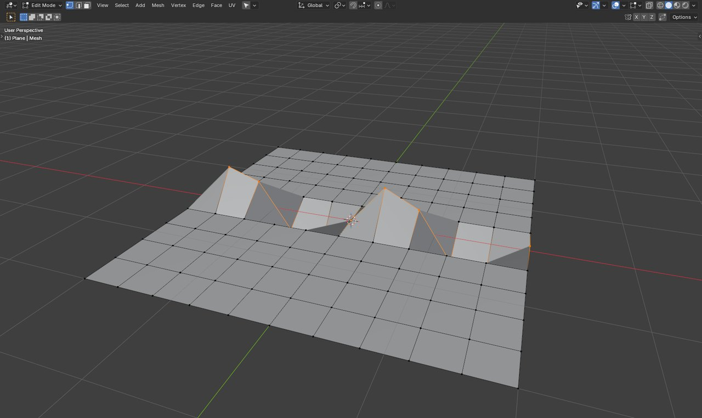
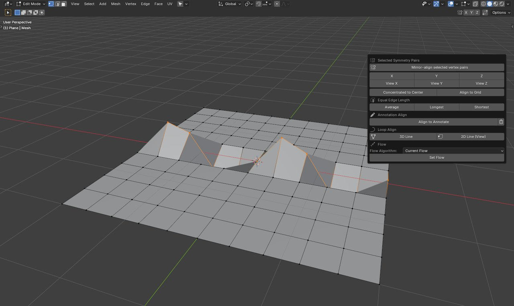
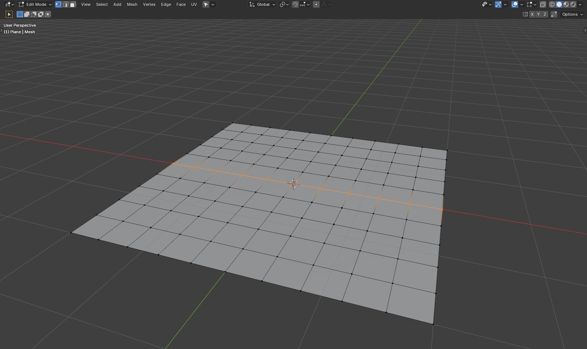
- In Edit Mode, select the vertices you want to align.
- Open "Smart Modeling" tab > "Align, Flow and Deform" > "Mesh Align".
- Click "Open Align Presets" in the "Execution" area (you can also assign it to a key and open it that way).
- Click "Z" in the popup.
What to look for: The vertices of the selected row line up at the same height. "X" and "Y" likewise align the coordinates along their own directions.
ExampleToggle Vertex Slide with a Header Button(demonstrated on Cube)
When you set "Vertex Slide" to "On" in "Always-on Toggles", a toggle button appears in the header of the 3D Viewport in Edit Mode.
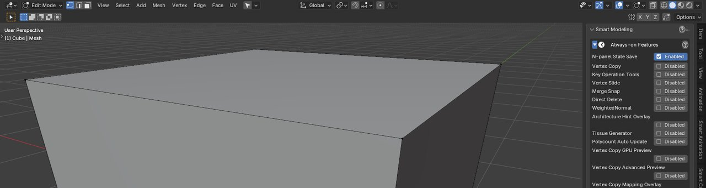
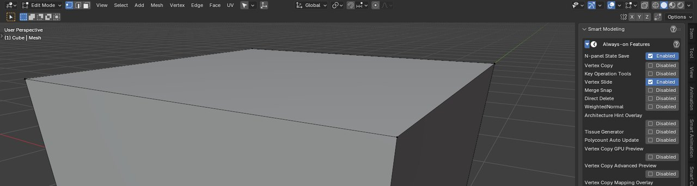
- Open "Smart Modeling" tab > "Always-on Toggles".
- Set "Vertex Slide" to "On".
- Switch to Edit Mode and look to the right of "UV" in the header of the 3D Viewport.
What to look for: An arrow button is added to the right of the "UV" menu. Clicking it toggles Vertex Slide in the same way as "Toggle Vertex Slide" in the panel.
5-5. Retopo and Rebuild
This section header holds tools for retopology (the work of rebuilding a mesh with a clean face flow on top of the original shape) and tools that rebuild faces.
Location"Smart Modeling" panel > "Retopo and Rebuild"
| Item | What it does |
|---|---|
| "Quad Retopo" | A tool for drawing and creating strips of quad faces (quad strips) and retopology helper shapes. The most commonly used button is "Draw Quad Strip". There are also "Retopo Setup", "Set from Selection", "Use Active Mesh", and "Clear Target" for choosing what the faces fit to, "Quad Field Paint (Drag)", "Boundary Trace", "Fill / Relax / Project", "Set Guide Edges", "Project Selected to Target", and more. "Manual Keymap Registration" lists "Draw Quad Strip" and "Start Retopo Pen". While drawing, confirm or cancel by following the operation guide shown on screen. |
| "Face Builder" | Quickly create the next face from the selected vertices or edges. The button is "Make Edge/Face". It is good for retopology and for filling holes where faces are missing. |
| "PolyQuilt Retopo" | A retopology tool for drawing and fixing polygons on a surface. Launch it with the "PolyQuilt" button. You can create something to start drawing on with "Add Empty Mesh Object". |
ExampleFill a Hole with a Face(demonstrated on Grid plane)
Select the 4 vertices around a hole and create a single face there.
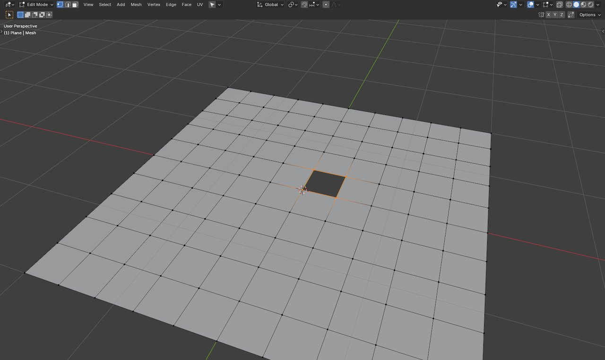
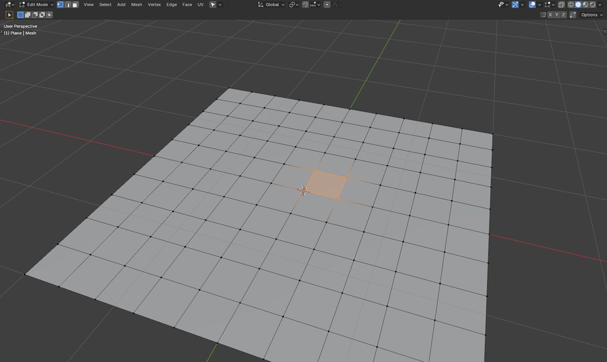
- Put the plane in Edit Mode and switch to vertex select mode.
- Select the 4 vertices around the hole.
- Open "Smart Modeling" tab > "Retopo and Rebuild" > "Face Builder".
- Click "Make Edge/Face" in the "Execution" area.
What to look for: A new face is created where the hole was, and the plane becomes one continuous surface.
5-6. Delete and Cleanup
This section header holds tools that delete unneeded parts, tidy up objects, and fix mesh problems.
Location"Smart Modeling" panel > "Delete and Cleanup"
| Item | What it does |
|---|---|
| "Direct Delete" | In Edit Mode, delete immediately in the way that matches the selection, with fewer confirmation dialogs. The buttons in the "Execution" area are "Delete Selection", "Delete Through", "Override Delete Key", "Override Backspace", "Delete Objects", and "Delete History (Remove Modifiers)" (removes all modifiers of the selected objects). The "Settings" area has "Smart Context", "Ignore Hidden", "Auto Fill", and more. "Manual Keymap Registration" lists "Delete Selection", "Override Delete Key", "Override Backspace", "Delete Through", "Delete Objects", and "Delete History". |
| "Model Organizer" | Organize the selected mesh objects all at once. It supports organizing names, applying transforms, cleaning up mesh data, handling modifiers, and backup and restore. Inside are the "Execution" area at the very top (the "Organize Selection" and "Restore Backup" buttons and the button with a trash can mark), and the "Preset", "Modifiers", "Transform", "Display", "Clean Data", "Origin / Pivot", "Rename / Collections", "Preflight Checks", and "Backup / Restore" areas. In "Origin / Pivot", you choose items such as "World Origin (0,0,0)". |
| "Organize Selection" | This is the button in the "Execution" area at the very top of Model Organizer. It organizes with the selected settings. |
| "Enable Backup" | It is in the "Backup / Restore" area. When you turn it on, a backup for undoing is created before organizing. It is off at first. The number of existing backups is shown in "Saved Backups" below this. |
| "Restore Backup" | This is the button to the right of "Organize Selection" in the "Execution" area (it looks like "Backup..." when the width is narrow). It restores the state before organizing from a backup. The button with a trash can mark to its right deletes backup data that is no longer needed. |
| "Rename Data to Object Name" | This is the button at the very bottom of the "Clean Data" area of Model Organizer. It makes the data name of each selected object match the object's name. Data that is shared by several objects or linked data is skipped and reported. |
| "Mesh Repair" | A tool that finds and fixes common mesh problems. It is good for checking before exporting, simulation, or Boolean. Buttons such as "Unify/Flip", "Smooth", "Reduce", "Refine", "Remesh", "AutoFix", and "Flatten Selection" are listed in the "Execution" area. |
ExampleRemove All Added Modifiers at Once(demonstrated on Suzanne)
Remove all the modifiers at once from a Suzanne that has subdivision and twist modifiers.
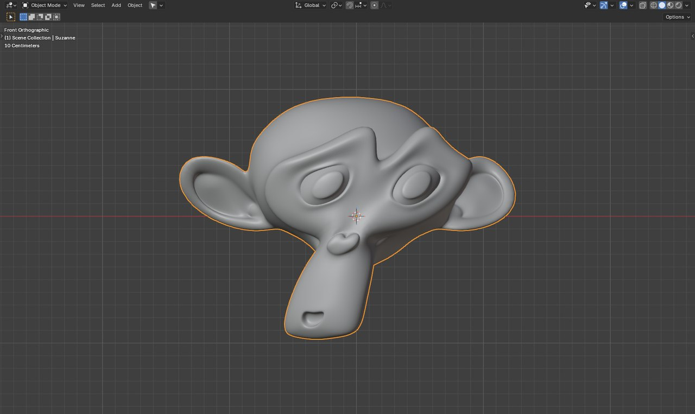
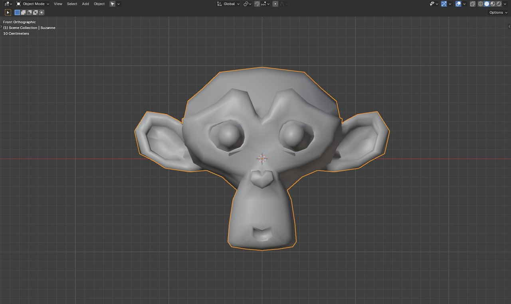
- Select Suzanne in Object Mode.
- Open "Smart Modeling" tab > "Delete and Cleanup" > "Direct Delete".
- Click "Delete History (Remove Modifiers)".
What to look for: The smooth, twisted shape returns to the original, angular Suzanne from before the modifiers were added. The mesh itself does not change.
5-7. Hard Surface Modeling
This section header holds helper tools for making shapes with clearly defined corners (hard surface), such as machines and props.
Location"Smart Modeling" panel > "Hard Surface Modeling"
| Item | What it does |
|---|---|
| "Crease Preset" | Assign, copy, and select by value the crease values of edges (how much corners stay sharp after subdivision) using numeric buttons. Before loading, the "Settings" area lists "Use Pie Menu", "Button Count (Selected)", "Values (Selected)", "Button Count (Linked)", "Values (Linked)", "Delimit by Seam", "Delimit by Sharp", and "Delimit by Material". "Button Count" and "Values" set the number and values of the numeric buttons. Below them are "Selected Edge Crease", "Crease Match Tolerance", "Crease Value to Select", and "Approximate Paste Tolerance", and the name of each item is shown above its input field. The buttons in the "Execution" area are "Open Crease Preset", "Select Same Value", "Copy Selected Edge Creases", "Paste Same Topology", and "Paste Approximate". Clicking "Open Crease Preset" opens a popup with a row of numeric buttons. It can also be used by registering it to a key. After you use it once, the same numeric buttons and a "Preset Values" area for changing "Button Count" and "Values" also appear in the panel. Buttons in the "Select" area apply the same value to the selected edges, and buttons in the "Link" area apply it to the connected edges as well. For the range over which connected edges are followed, click "Seam", "Sharp", or "Material" in "Linked Delimit" to stop at those boundaries. The button count and values saved with N-panel State Save enabled are applied both before and after the tool is loaded, even after re-enabling. |
| "Weighted Normal" | Add weighted normals (a mechanism that adjusts the direction of shading according to the size of faces). The button is "Apply Weighted Normal". |
| "Bolt Generator" | Create shapes such as bolts, nuts, and screws. The button is "Add Bolt". Choose the type, dimensions, and thread, then add it. |
ExampleChange the Number Buttons to Your Own Values(demonstrated on Subdivided cube)
Change "Button Count (Selected)" and "Values (Selected)" so that only the crease values you use often are lined up as buttons. If you save them with N-panel State Save enabled, the same button count and values are used both before and after the tool is loaded, even after re-enabling.
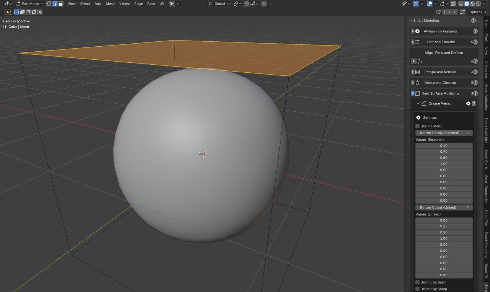
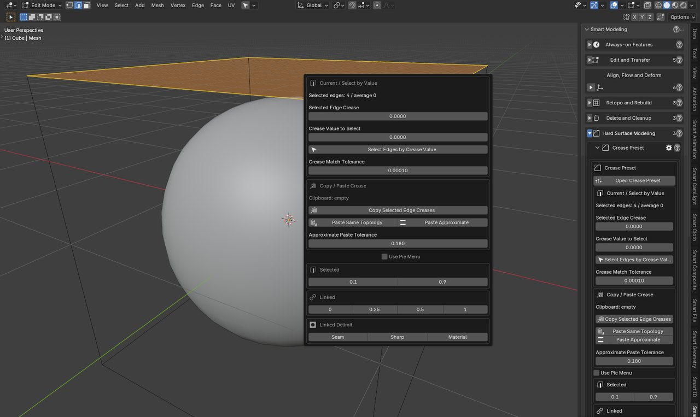
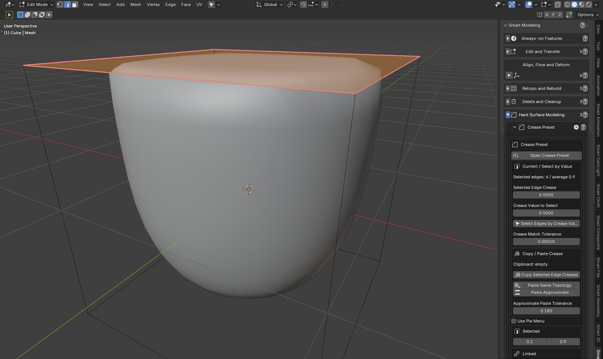
- Open "Hard Surface Modeling" > "Crease Preset".
- In the "Settings" area, set "Button Count (Selected)" to 2 and the first two "Values (Selected)" to 0.1 and 0.9.
- In Edit Mode, select the 4 top edges and click "Open Crease Preset".
- Click "0.9" in the "Select" area of the popup.
What to look for: The "Select" area of the popup now has two buttons, "0.1" and "0.9". Clicking "0.9" gives corners that keep slightly more roundness than "1". After you use it once, the same number buttons and the "Preset Values" area also appear in the panel.
ExampleAdd a Crease to the Top Edges to Sharpen the Corners(demonstrated on Subdivided cube)
Give the 4 top edges of a cube rounded by subdivision a crease of 1, so that only the top rim becomes crisp.
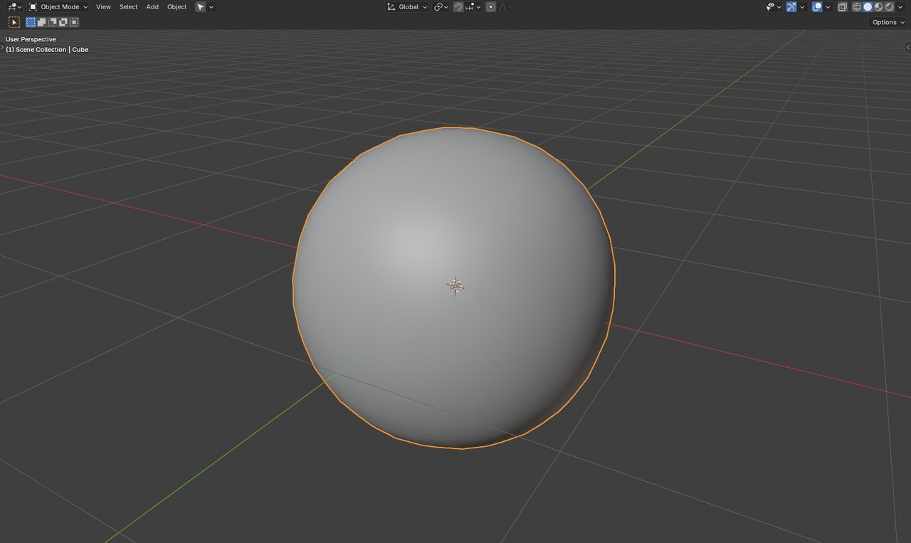
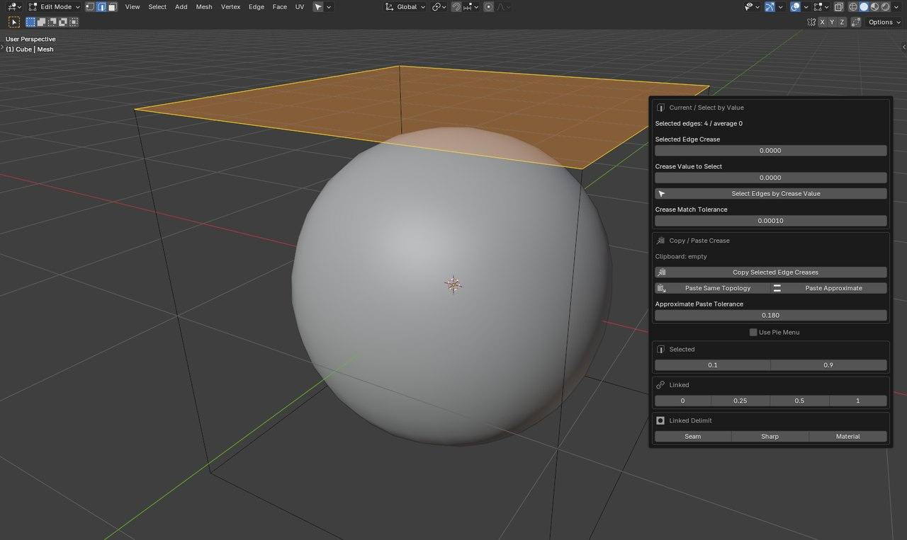
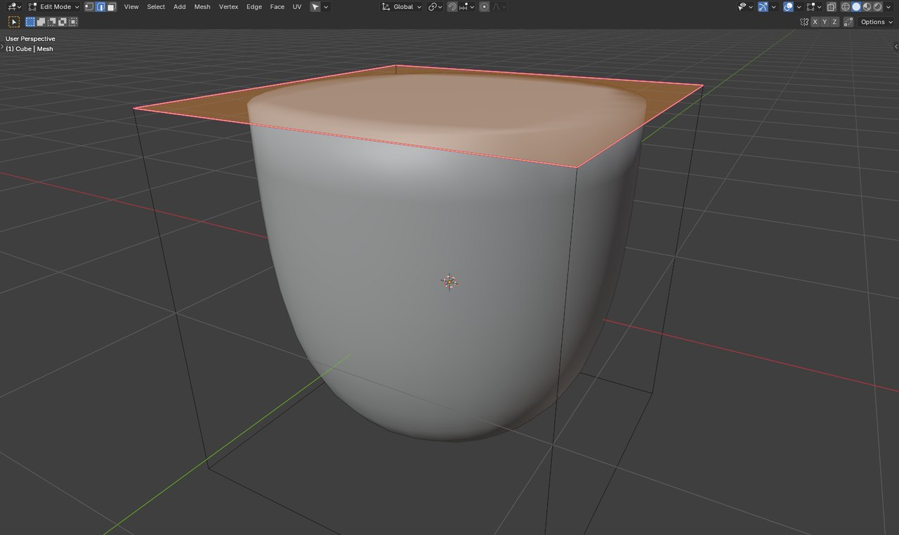
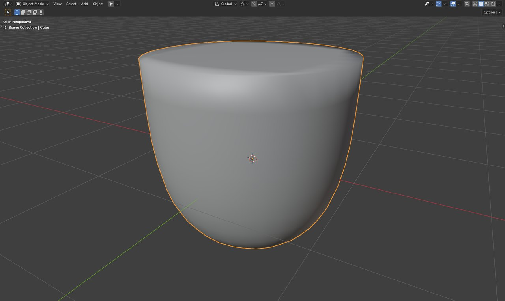
- Put the cube with the subdivision modifier in Edit Mode and switch to edge select mode.
- Select the 4 edges around the top face.
- Open "Hard Surface Modeling" > "Crease Preset".
- Click "Open Crease Preset" in the "Execution" area.
- Click the number button "1" in the "Select" area of the popup.
What to look for: The rounded top rim takes on a sharp-cornered shape while staying subdivided. Edges with a crease are shown as colored lines in Edit Mode.
ExampleRemove Shading Smears from a Beveled Box(demonstrated on Beveled cube)
When you set a beveled box to Shade Smooth, diagonal shading smears across its large faces. Use weighted normals to even out the shading of the faces so they look flat.
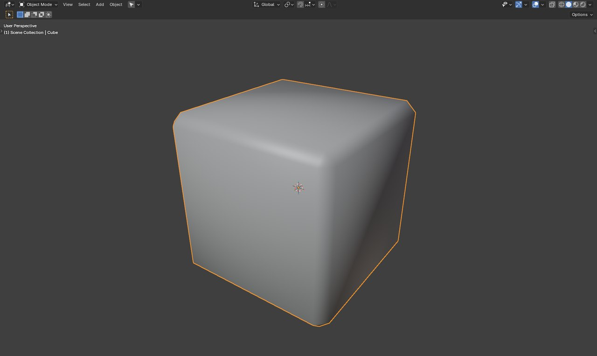
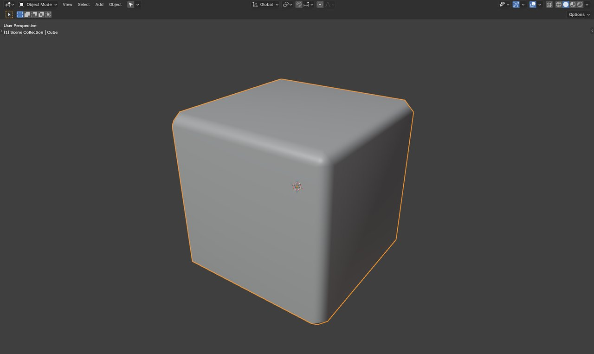
- Select the box in Object Mode.
- Open "Smart Modeling" tab > "Hard Surface Modeling" > "Weighted Normal".
- Click "Apply Weighted Normal".
What to look for: The diagonal smears on the left and top faces disappear, every face becomes evenly bright, and only the rounded corners look smooth. The shape (the vertex positions) does not change.
ExampleRun Weighted Normal from the Alt+N Menu(demonstrated on Cube)
When you set "Weighted Normal" to "On" in "Always-on Toggles", an item is added to the "Normal" menu (Alt+N) in Edit Mode.
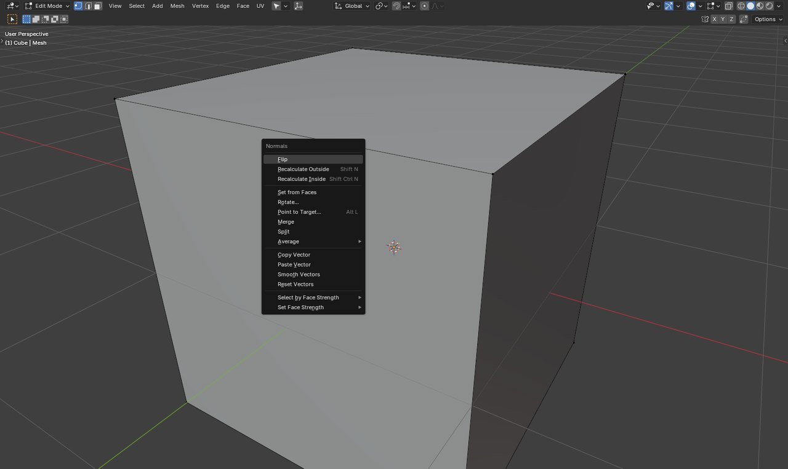
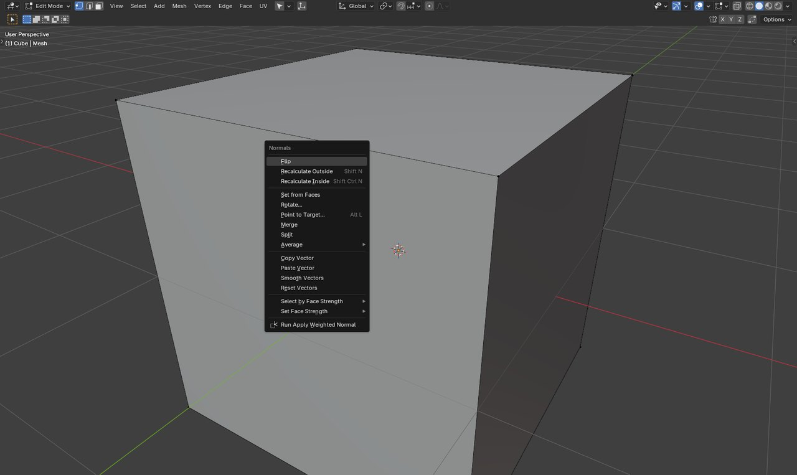
- Open "Smart Modeling" tab > "Always-on Toggles".
- Set "Weighted Normal" to "On".
- Press Alt+N in Edit Mode.
What to look for: "Run Apply Weighted Normal" is added at the very bottom of the "Normal" menu. Setting it back to "Off" removes this item.
5-8. Sketch and Retopo
This section header holds tools that create strip-shaped faces from annotations (lines drawn by hand on the screen) and tools that add and edit curves.
Location"Smart Modeling" panel > "Sketch and Retopo"
| Item | What it does |
|---|---|
| "Sketch Surface" | Convert annotation lines into strip-shaped faces (surface strips) or curves. "Convert to Surface Strip" creates a strip of faces along the line. The width of the strip is set by "Surface Width" in the "Settings" area. The front side of the strip's faces points toward you in the view at the time of conversion. The strip spreads to the left and right of the line as seen from the current view, so if you click it in the same view the line was drawn in, the strip looks the same width no matter which direction you drew in. "Convert to Curve" creates a curve with the same shape as the line. Entering a value in "Preview Bevel" makes a curve with thickness. There are also "Quad Field Paint Settings", "Boundary Trace", "Retopo Setup", and "Fill / Relax / Project", which are the same as in Quad Retopo. |
| "Curve Objects" | Add curve types that are not in the standard set, and basic curve shapes. |
| "Curve Toolkit" | Add tools for editing Bezier curves and NURBS curves and surfaces. |
- Set the view to the direction you want the strip to face (numpad 7 for top, numpad 1 for front) and draw an annotation line.
- Without changing the view, open "Sketch Surface" and click "Convert to Surface Strip".
- If needed, adjust the settings of the resulting shape.
ExampleTurn a Hand-Drawn Line into a Strip of Faces (Top View)(demonstrated on Annotation line)
From an annotation line drawn in top view, create a strip of faces that follows the line. The front side of the strip's faces points toward you in the view at the time of conversion.
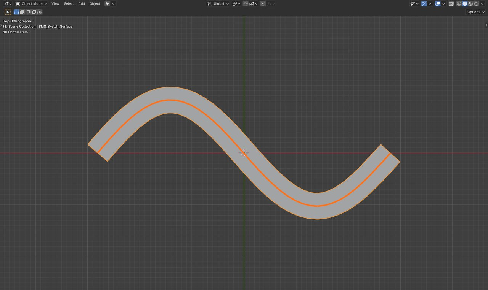
- Switch the 3D Viewport to top view (numpad 7).
- Draw an annotation line.
- Open "Smart Modeling" tab > "Sketch and Retopo" > "Sketch Surface".
- Set the width of the strip with "Surface Width" in the "Settings" area.
- Click "Convert to Surface Strip".
What to look for: A wide strip of faces is created along what was a thin annotation line. Seen from the current view, the strip extends to the left and right of the line by the value of "Surface Width".
ExampleAlso Turn a Line Drawn in Front View into a Strip of Faces(demonstrated on Annotation line)
The strip extends to the left and right of the line as seen from the view at the time of conversion. Even if you draw in front view, it becomes a wide strip as seen in the view you drew it in. The front side of the strip's faces points toward you in the view at the time of conversion.
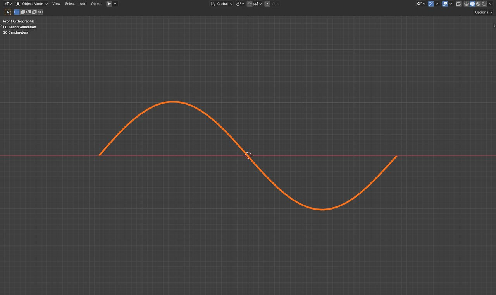
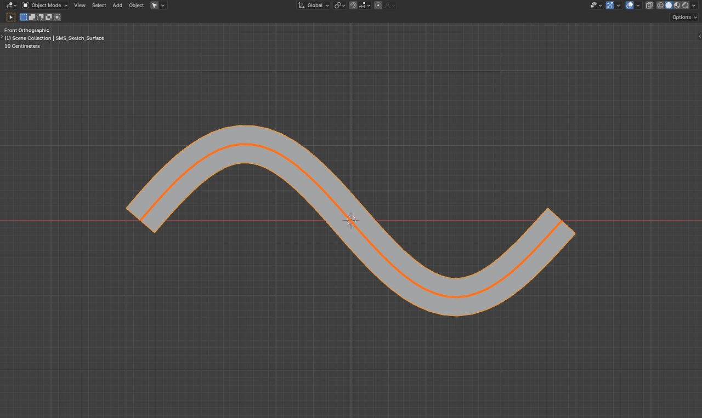
- Switch the 3D Viewport to front view (numpad 1).
- Draw an annotation line.
- Open "Smart Modeling" tab > "Sketch and Retopo" > "Sketch Surface".
- Set the width of the strip with "Surface Width" in the "Settings" area.
- Click "Convert to Surface Strip".
What to look for: A strip of uniform width is created, extending above and below the line just as seen from the front. If you rotate to an angled view, you can see that the strip is a single sheet facing the view.
ExampleTurn a Hand-Drawn Line into a Curve(demonstrated on Annotation line)
Convert an annotation line into a curve object that you can edit later.

- Draw an annotation line in the 3D Viewport.
- Open "Smart Modeling" tab > "Sketch and Retopo" > "Sketch Surface".
- To see the thickness, enter a value in "Preview Bevel" in the "Settings" area.
- Click "Convert to Curve".
What to look for: A curve with the same shape as the line is created. Because it is a curve, you can move its control points in Edit Mode or give it thickness with a bevel.
5-9. Generate, Scatter, Build
This section header holds tools that automatically create terrain, trees, ivy, snow, building parts, and more, and tools that scatter objects over a surface.
Location"Smart Modeling" panel > "Generate, Scatter, Build"
| Item | What it does |
|---|---|
| "Architecture" | Create architectural items such as rooms, doors, windows, and stairs. |
| "Cell Fracture" | Break the selected object into small pieces. Start by trying a small number of pieces. |
| "Ivy Generator" | Create the shape of ivy from a start point on or near a mesh. |
| "Object Scatter" | Scatter objects over another object or over faces. |
| "Snow Generator" | Create a snow mesh on the upward-facing faces of the selected object. Set the amount of snow with "Coverage" and the size of the snow grains with "Height", then click "Add Snow". If you click it in Edit Mode, it switches to Object Mode to create the snow. When you turn on "Selected Faces", snow is created only on the selected faces. If no faces are selected, or there are no upward-facing faces, it shows a message without creating anything. |
| "Terrain Generator" | Create a ground mesh from terrain settings. |
| "Tissue Generator" | A tool that performs mesh pattern tiling (tessellation) and reaction diffusion. |
| "Tree Generator" | Create a tree with a trunk, branches, and leaves from presets or settings. |
ExamplePile Snow on Suzanne's Head(demonstrated on Suzanne)
Create clumps of snow as a single mesh on the upward-facing faces of the selected mesh.
- Select Suzanne in Object Mode.
- Open "Smart Modeling" tab > "Generate, Scatter, Build" > "Snow Generator".
- Click "Add Snow".
What to look for: White snow settles only on areas that face upward, such as the top of the head, the tops of the ears, and the top of the nose. No snow piles up under the chin. The snow is a separate object, so the original Suzanne does not change.
ExamplePut Snow Only on the Selected Faces(demonstrated on Grid plane)
When you turn on "Selected Faces", snow is created only on the faces selected in Edit Mode.
- Put the plane in Edit Mode and switch to face select mode.
- Select the faces you want to put snow on.
- Turn on "Selected Faces" in "Snow Generator".
- Click "Add Snow".
What to look for: Snow settles only on the selected right half, and nothing is created on the left half. Clicking the button switches to Object Mode automatically. When no faces are selected, a message appears and no snow is created.
5-10. Utilities
This section header holds a list for finding and using commands directly, helpers that work with other add-ons, and a collection of grouped commands.
Location"Smart Modeling" panel > "Utilities"

| Item | What it does |
|---|---|
| "Command Browser" | Shows the number of menus and operators (commands) found in the bundled tools, and the loading status of the tools. Use it when you want to click the command buttons of a loaded tool directly. |
| "Modifier Companion" | Shows helper commands that work with SmartModifier Suite. When SmartModifier Suite is missing or disabled, "Not detected" appears and no buttons are shown. |
| "Modeling Toolkit" | A collection of commands such as Boolean, loop cleanup, face filling, quad rebuilding, CAD cleanup, scatter, terrain, curve pipes, workplane, and falloff deform. Before loading, buttons such as "Model by Context", "Create Boolean Fusion", "Generate Terrain", "Create Solidify Shell", "Rebuild Quads", and "Set Workplane and Pivot" are lined up in one column in the "Execution" area, and an area for each command appears below in "Manual Keymap Registration". After loading, they become large icon buttons divided into five groups: "Context and Topology", "Hard Surface Modeling and Boolean", "Curve, Surface, and Retopo", "Procedural Generation", and "Cleanup, CAD, and Layout". Buttons that cannot be used with the current selection are shown dimmed. |
ExampleCut a Hole in Suzanne with a Cylinder (Boolean)(demonstrated on Suzanne and a cylinder)
Use a cylinder that passes through the head as the cutter (the cutting side) to make a round hole in Suzanne. The cut is made with a modifier, keeping the original shape intact.
- Select the cutter cylinder, then hold Shift and select Suzanne to make Suzanne active.
- Open "Smart Modeling" tab > "Utilities" > "Modeling Toolkit".
- Click "Create Boolean Fusion" in the "Execution" area.
What to look for: The cylinder is hidden, and a round hole opens where it passed through. At the same time, a small chamfer (bevel) is added to the corners, giving an angular look with crisp shading.
Other Screens

6. Common Tasks
Copy Vertex Positions to Another Mesh with the Same Shape
Copy a shape fixed in one mesh onto another mesh with the same vertex count and connectivity.
- Open the "Smart Modeling" tab, then open "Vertex Copy" under "Edit and Transfer".
- Put the source mesh in Edit Mode and select the vertices you want to copy.
- Click "Copy Source" to have it remember the positions (after loading, it is the "Copy" button).
- Put the target mesh in Edit Mode and select the vertices you want to change.
- Click "Paste Same Vertex Number" (after loading, it is "Paste").
- If it doesn't match well, check the number of matching vertices with "Validate Same Vertex Number" (after loading, it is "Confirm").
Result: Only the selected vertices of the target move to the same positions as the source.
Assign Shortcuts to Frequently Used Commands
This add-on does not add shortcuts automatically, so register only the commands you need yourself.
- Open the row of the tool you want to use and look at "Manual Keymap Registration" below.
- Check the "Registration Location" of the command you want to use (for example: Edit > Preferences > Keymap > 3D View > Mesh).
- Click the copy icon to the right of "Registration ID".
- In "Keymap" in Preferences, open the same place as the "Registration Location", add a new item, and paste the copied ID.
- Assign a free key.
Result: That command now runs with the key you chose.
Use Vertex Slide Like Ordinary Move
Move vertices only along edges while keeping ordinary operations such as the G key.
- Open "Vertex Slide" under "Align, Flow and Deform".
- Put the mesh in Edit Mode.
- Click "Toggle Vertex Slide" in the "Execution" area to turn it ON.
- Select vertices and move them with the G key or the gizmo.
- When you are done, click "Toggle Vertex Slide" again to turn it OFF.
Result: While it is ON, move, rotate, and scale follow the connected edges.
Tidy Up Objects Together Before Exporting
Finish applying scale, removing unneeded data, and so on in one go.
- In Object Mode, select the mesh objects you want to tidy up.
- Open "Model Organizer" under "Delete and Cleanup".
- Choose a "Preset" and check areas such as "Transform" and "Clean Data".
- If you want to be able to undo it, turn on "Enable Backup" in "Backup / Restore".
- Click "Organize Selection".
- If the result is not what you expected, click "Restore Backup".
Result: The selected objects are organized according to the settings. If you enabled the backup, you can return to the state before organizing.
Assign Creases with Numeric Buttons
Use the "Open Crease Preset" popup to assign a crease of 0.5 or 1 to the selected edges.
- Put the mesh in Edit Mode and select edges.
- Open "Crease Preset" under "Hard Surface Modeling".
- Click "Open Crease Preset" in the "Execution" area (you can also open it by registering its registration ID from "Manual Keymap Registration" to a key).
- Click a numeric button in the "Select" area.
Result: The selected edges get a crease with the value you clicked.
7. Troubleshooting
- I opened a tool and "Always-on is off." appeared. Can't I use it?
- You can. This message means the feature that keeps running in the background is stopped. Click a button and the tool is loaded and runs. Set it to "On" in "Always-on Toggles" only when you want it to keep running in the background.
- My shortcut doesn't work.
- This add-on does not register shortcuts automatically. Copy the registration ID from "Manual Keymap Registration" of each tool and register it yourself in the keymap in Preferences.
- No buttons appear in "Modifier Companion".
- This item works with SmartModifier Suite. Buttons appear only when SmartModifier Suite is installed and enabled. When it is missing, "Not detected" is shown.
- There is no Weighted Normal item in the Alt+N Normal menu.
- Set "Weighted Normal" to "On" in "Always-on Toggles". "Run Apply Weighted Normal" is added at the very bottom of the "Normal" menu (Alt+N).
- Clicking "Restore Backup" doesn't bring anything back.
- A backup is created only when "Enable Backup" in "Backup / Restore" is on. It is off at first, so turn it on before organizing.
- "Error" appeared to the right of a tool row.
- Loading of that tool has failed. When you open the row, part of the reason for the failure may be shown.
For problems common to every add-on, such as an add-on not appearing or the interface language not changing, see "Troubleshooting" in the SmartTools Overall Specification.
8. Glossary
- N Panel (Sidebar)
- A narrow area that appears on the right side of the 3D Viewport and similar editors. Open and close it with the N key.
- Edit Mode
- A mode in which you work directly on the vertices, edges, and faces of a mesh. Switch to it with the Tab key.
- Always-on Feature
- A feature that keeps running in the background once it is loaded. Examples are display helpers and additions to menus.
- Topology
- The number of vertices of a mesh and how they are connected.
- Retopo
- The work of rebuilding a mesh with a clean face flow on top of the original shape.
- Crease
- A value that decides how much the corners of an edge stay sharp when subdivided.
- Weighted Normal
- A mechanism that adjusts the direction of shading according to the size of faces and so on. It makes hard surface models look cleaner.
- Auto Merge / Snap
- Auto Merge is a feature that automatically joins nearby vertices. Snap is a feature that makes the thing you are moving stick to vertices or faces.
- Annotation
- A line you can draw by hand on the screen.
- Keymap
- A table of combinations of keys and commands. You edit it in Preferences.
- Registration ID
- The name of a command used when registering it in the keymap. You can copy it with the copy icon in "Manual Keymap Registration".
- Redo Panel
- An adjustment area that appears at the lower left of the 3D Viewport right after you run a command. You can fix the numeric values of the last operation.
9. Appendix: Version, Checksum and Limitations
| Add-on | SmartModeling Suite (smart_modeling_suite) |
|---|---|
| Version | 1.0.0 |
| ZIP | SmartModelingSuite_1.0.0.zip |
| Size | 3,122,923 bytes |
| SHA256 | 007ef7d6095124a7e6c4a67ca027c8ae2ce36cd33707aa48cc397c03ee8b807f |
Limitations and Notes
- Shortcuts are not registered automatically. Register them yourself by following "Manual Keymap Registration".
- Each tool is loaded only when you click a button. While it is loading, "Loading" appears to the right of the row.
- Once loaded, the display changes to that tool's own screen, so the layout of buttons changes for some tools. The language of the suite's section headers is kept consistent before and after loading. When a long command name does not fit in a narrow area, the name wraps, and you operate it with the "Execution" button below it.
- "Modifier Companion" can be used only when SmartModifier Suite is enabled.
- Model Organizer backups are created only when "Enable Backup" is on.
- When you have set where it appears in Smart Tools Manager, the editors where the panel appears follow that setting.
- In the "Purpose" text of Manual Keymap Registration, the English names of the tools (such as Direct Delete and Model Organizer) appear as they are in some places.
SmartModeling Suite Manual v1.0.0 / Built 2026-11-19